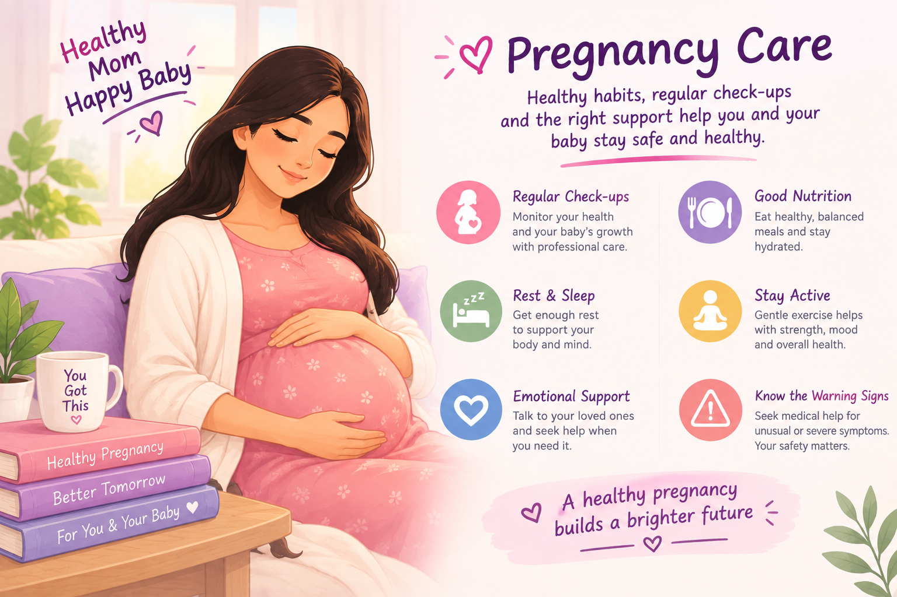

Pregnancy Needs Care and Support
Pregnancy is a major physical and emotional change in a woman's life. Regular antenatal care, nutritious food, adequate rest and support from healthcare professionals can help monitor the health of both the mother and baby.
Every pregnancy is different. If something feels unusual or concerning, it is important to contact a qualified healthcare professional rather than ignoring the symptoms.
🌷 Common Changes During Pregnancy
🤢 Nausea
Nausea or vomiting can occur, particularly during early pregnancy.
😴 Tiredness
Increased tiredness and the need for more rest are common.
🍽️ Appetite Changes
Appetite, food preferences and sensitivity to smells may change.
💧 Frequent Urination
Needing to urinate more frequently can occur during pregnancy.
💗 Emotional Changes
Hormonal and life changes may affect mood and emotions.
🌸 Body Changes
Weight, breast size, abdomen and other parts of the body change as pregnancy progresses.
💗 Pregnancy Care: Do & Don't
✅ Do
- Attend recommended antenatal check-ups.
- Follow advice given by your healthcare professional.
- Eat a varied and nutritious diet.
- Drink enough fluids unless your doctor advises otherwise.
- Get adequate rest and sleep.
- Take medicines or supplements only as advised by a healthcare professional.
- Ask for emotional and practical support when needed.
❌ Don't
- Do not ignore unusual or severe symptoms.
- Do not take medicines or supplements without medical advice.
- Do not skip important antenatal appointments.
- Do not smoke or use alcohol during pregnancy.
- Do not feel embarrassed about asking pregnancy-related questions.
- Do not rely only on information from social media for medical decisions.
- Do not delay urgent medical care when warning signs occur.
👩⚕️ When Should You Seek Medical Help?
Contact a qualified healthcare professional if you have concerns about your pregnancy or notice symptoms that are unusual for you.
Seek urgent medical care for symptoms such as heavy vaginal bleeding, severe abdominal or pelvic pain, severe headache with vision changes, difficulty breathing, chest pain, fainting, seizures, or other serious or rapidly worsening symptoms.
During later pregnancy, a noticeable reduction or change in your baby's usual movements should also be discussed promptly with your maternity care provider.